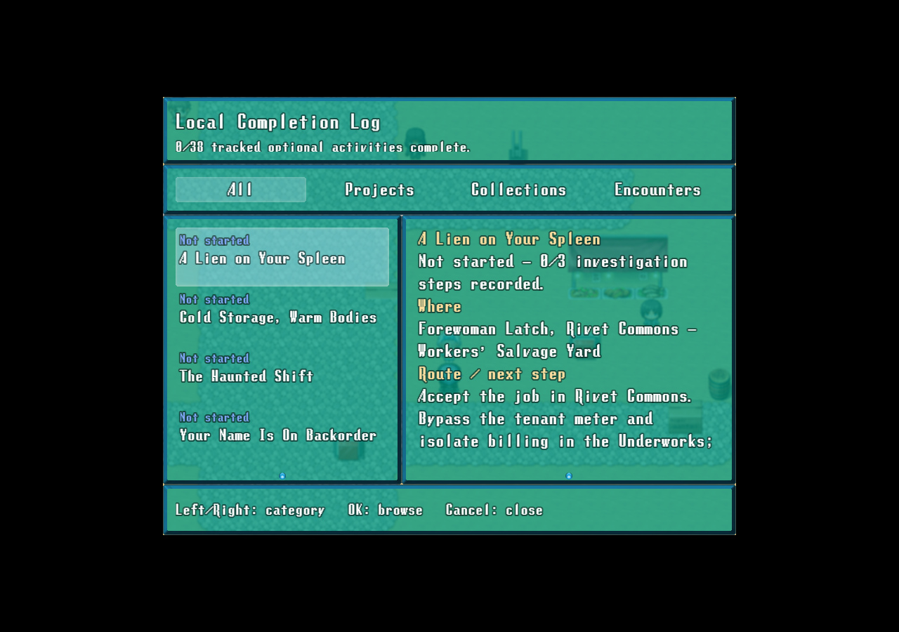
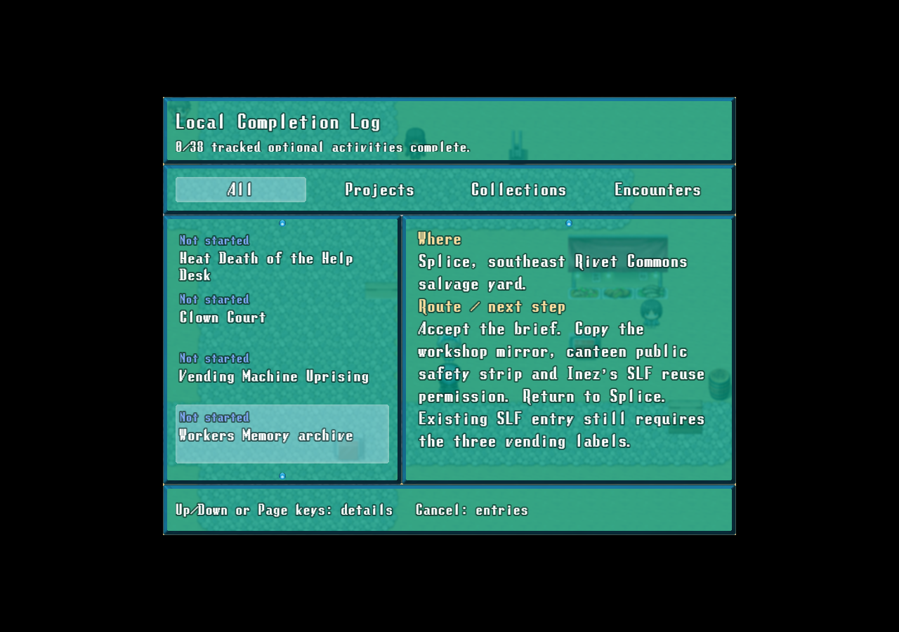
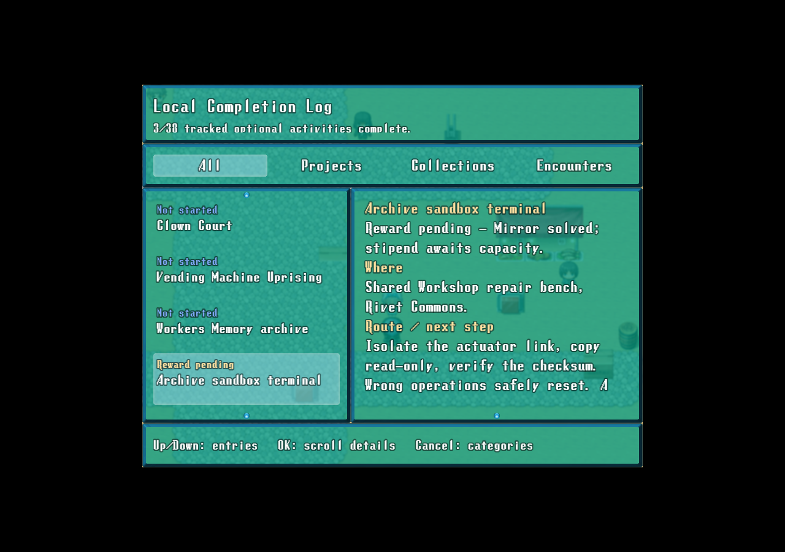

Existing and new savesEntries show progress, locations and route hints. No migration or new save fields are needed.
Scrolling detailsOK selects entries and activates details. Up/Down and Page keys scroll; Cancel steps back.
Rewards still waitingA solved terminal or passed sorting run stays pending until its reward is claimed. Consumed exchanges stay complete.